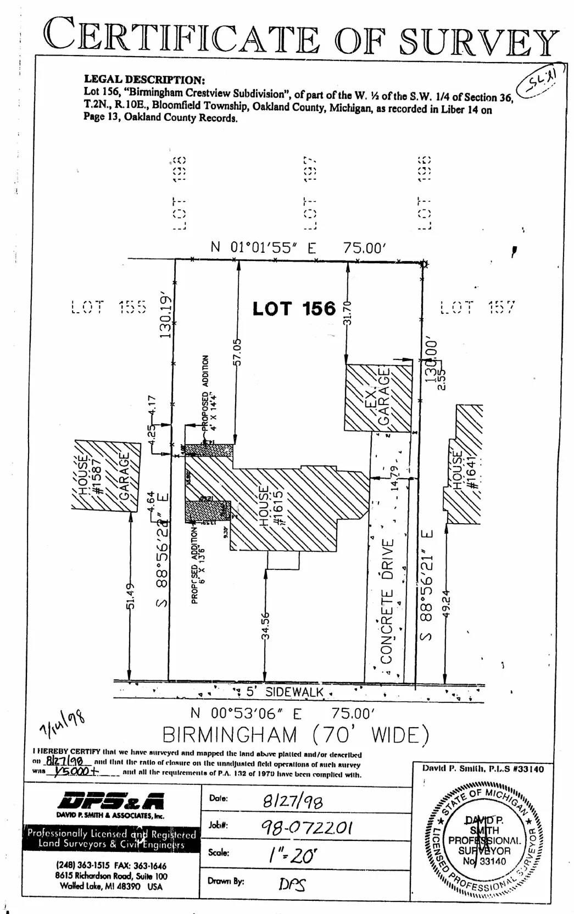
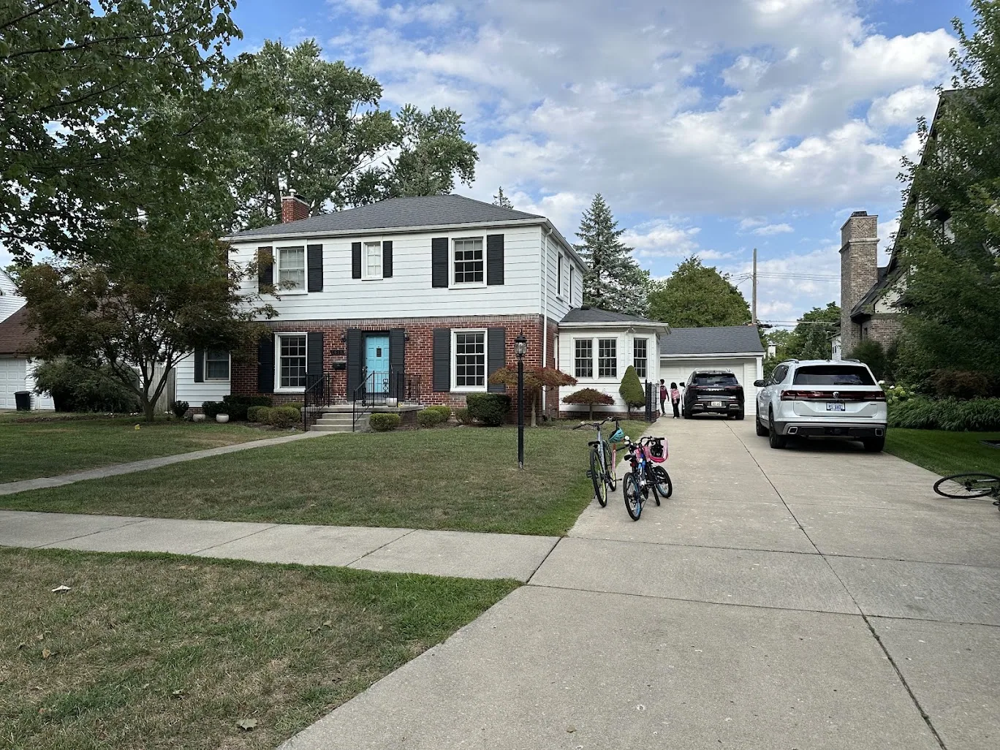
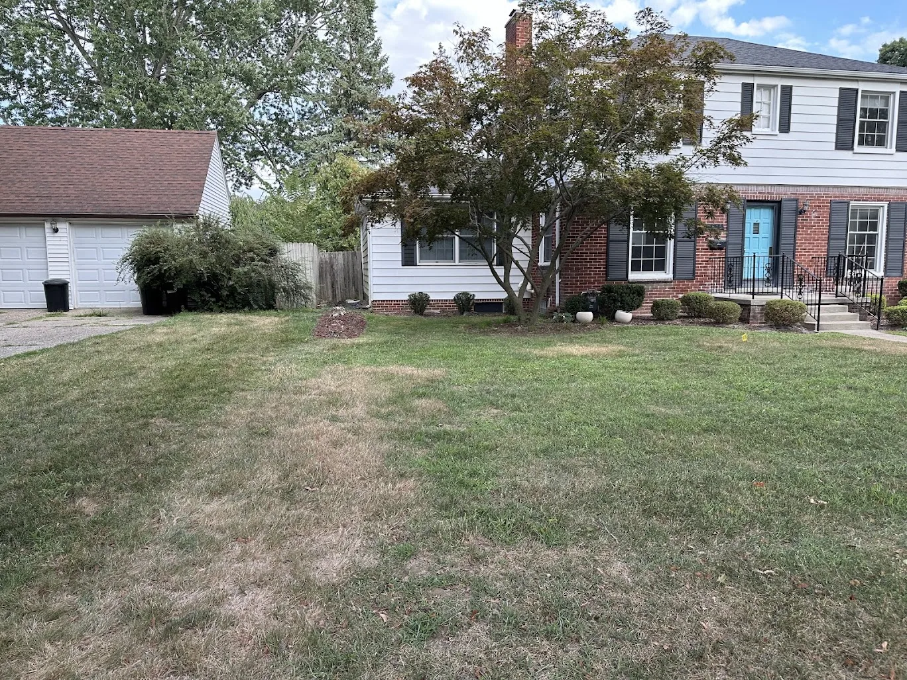
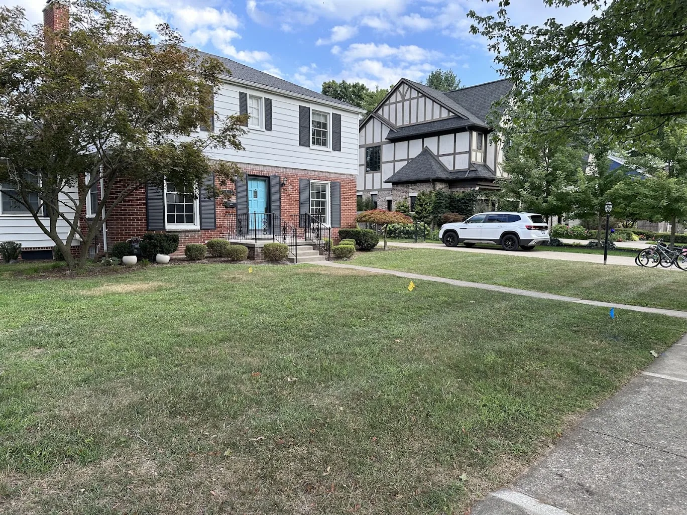
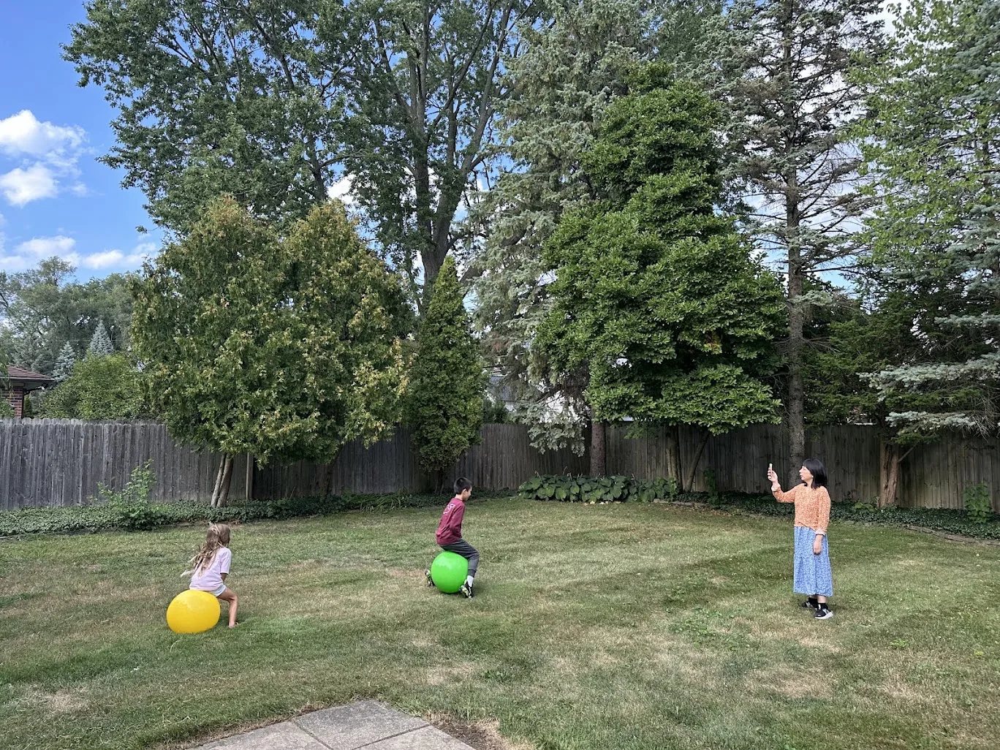
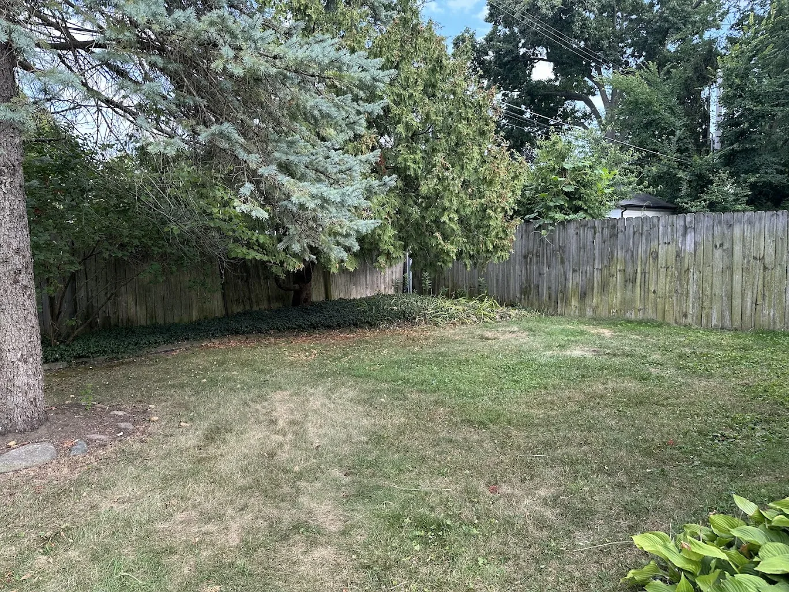
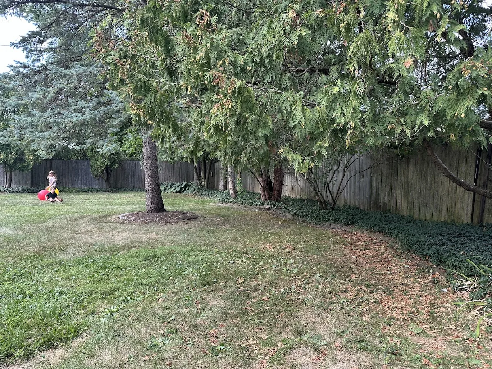
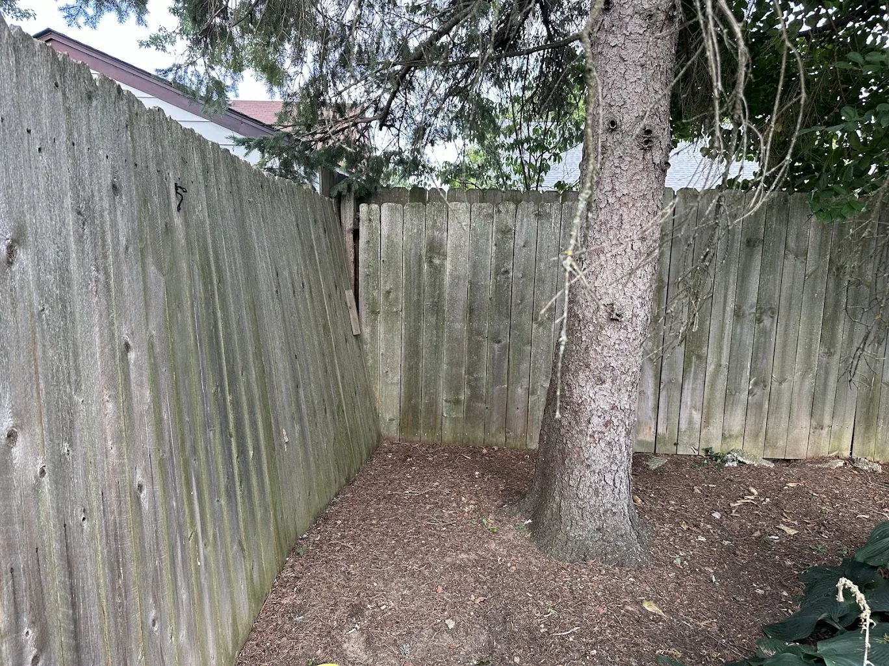
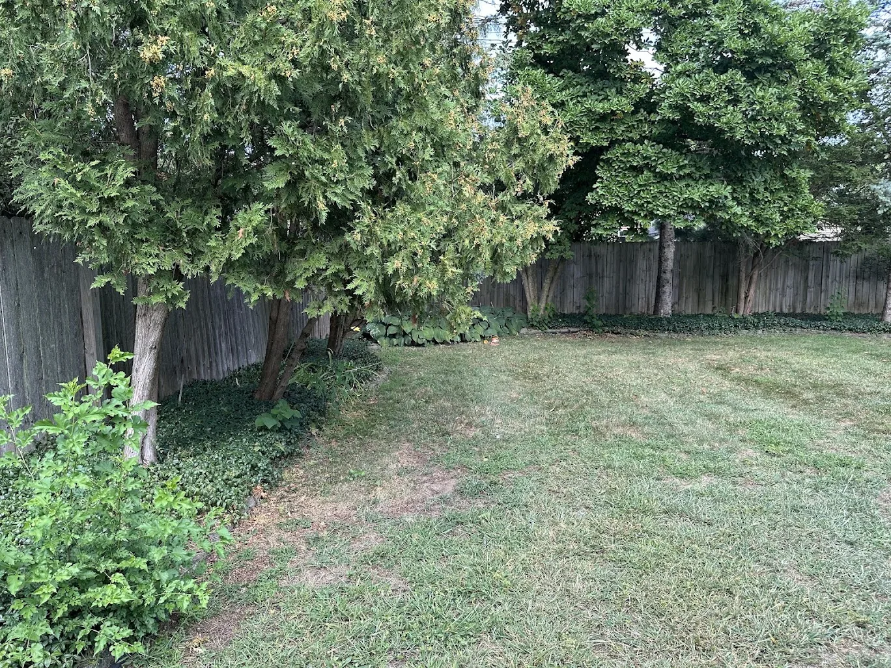

The lot
75 ft wide × 130 ft deep (9,750 sq ft).
Current 3D house placement
East side-yard paving: the owner photo request covers the complete six-foot strip from finished wall x=55.725 to inner fence rail x=61.725, along z=7–52.5 ft. Total strip union 273 sq ft; net new paving 85.4835 sq ft after existing walks, connections and storage pads. Matching pavers stay at y=-1.35 ft, not house-floor level; the separate rack pad is replaced by the continuous surface. No lawn gaps inside this strip. Front driveway and rear path transitions remain; west path, patio and rear garden are unchanged. Detail isolation joints, edge restraint, frost base, permeability, drainage away from masonry and downspout discharge with the site designer; this is not structural, zoning, code or accessible-route approval.
Open the lot plan. Owner correction: leave exactly 6 ft from the finished east garage wall face to the nearest inside fence rail face. Keep the house footprint fixed and move both side boundaries 1 ft east from the preceding 5 ft-clearance study; the lot stays 75 × 130 ft. House-local boundaries are x = -12.605 / 62.395, z = -32.325 / 97.675. The reference rear wall face z = -0.325 remains 32 ft from the rear boundary; the stepped rear projection at z = -2.325 remains 30 ft away.
- Side-wall clearances to modeled property lines: 6.67 ft east and 12.38 ft west (west main wall face x = -0.225). East finished wall x = 55.725, inner fence rail face x = 61.725, fence centerline x = 61.895. The 6 ft owner-required fence clearance is not a legal setback; a survey and review of roof projections, easements and zoning remain necessary.
- The 6 ft datum is the primary finished masonry wall face, not projecting trim: the base coping reaches x = 55.815, leaving 5.91 ft locally to the rail. Roof/eave and hardware projections are not included in the 6 ft wall-face dimension.
- The west yard loses 1 ft. Its 3.5 ft path moves to x = -11.355 to -7.855, retaining its fence gap. The former narrow east path is incorporated into the full-strip paving described above; its rear garden segment remains unchanged. The west patio transition follows that path, retaining a flush 3 ft-wide graded join while reducing terrace width by 1 ft and paving by 12.1 sq ft (now about 251.7 sq ft). Rear boundary, rear path and all house/roof/furniture positions stay fixed. Grade, drainage and accessible-route approval remain unresolved.
- Front boundary to porch slab edge: approximately 36.48 ft. Steps and roof projections extend farther forward.
- Rear boundary to the original house roof overhang: approximately 29.58 ft. The roof/seating now move behind living, while kitchen/prep paving and dining steps remain uncovered. Both terrace rear edges align with the dining rear exterior face, approximately 32 ft from the boundary. The new living terrace adds about 102.6 sq ft paving; its garden connector extends around dining. Recheck site coverage and setbacks, not just the rear line. Steps still descend from the dining door; no direct living door is added. The separate rear-fence walkway remains z = -31.075 to -27.575 ft, 1.25 ft inside the rear boundary at its outer edge. House placement and all paving remain conceptual, not site or zoning approval.
- The driveway extends to the front lot boundary. Remove the separate straight entry walk to that boundary; use the garage/driveway and porch-side paver connection for front-door access. A public sidewalk, curb, and street right-of-way are not modeled.
The site retains the 29 × 9.1 ft outdoor patio limit, rear/side fence and gates, and a 3 ft 6 in fence-edge walkway with connectors to the patio and gates. The front yard stays open. Camera/light placements, site rules, and covered-patio/fence setbacks remain to verify.
This is a placement study, not a survey or zoning approval. Confirm actual boundaries, easements, required setbacks and projection allowances, lot coverage, height, drainage, grade, and driveway access with the architect and city before fixing the house location.
‣








